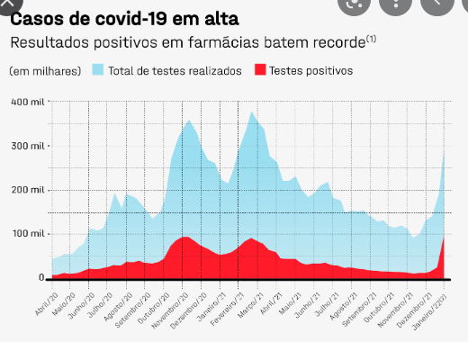
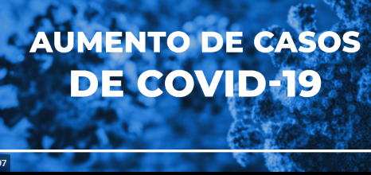
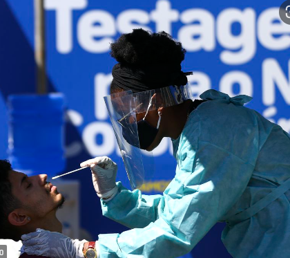
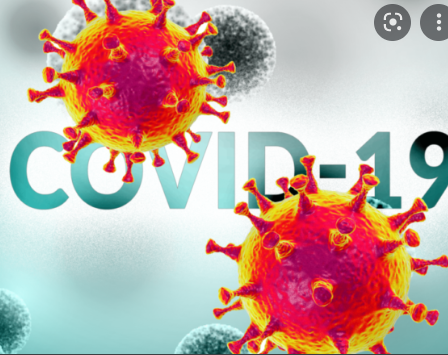

|  | Covid: COMO ELA SE ESPALHA? |
| O vírus pode se espalhar pela boca ou pelo nariz de uma pessoa infectada, em pequenas partículas líquidas expelidas quando elas tossem, espirram, falam, cantam ou respiram. O tamanho dessas partículas vai de gotas respiratórias maiores até aerosois menores. |
|
| 29/05/2022 ás 20:21 |
|  | Pandemia em São Paulo: transmissão aumenta, mas casos graves diminuem. |
| Apesar de aumento no número de infecções, média de mortes e internações em UTI diminuiu, graças à vacinação, segundo dados do “Boletim Epidemiológico USP-Covid” desta semana |
|
| 25/05/2022 ás 12:30 |
|  | Estado de São Paulo lidera ranking mundial de vacinação |
| Site Our World in Data aponta cobertura vacinal mais ampla do que EUA, Reino Unido, Espanha, Alemanha, França, Japão, Itália e China | |
| 18/05/2022 ás 16:25 |
|  | Documentário aborda a pandemia na perspectiva dos trabalhadores da saúde |
| Três professoras-pesquisadoras da Escola Politécnica de Saúde Joaquim Venâncio (EPSJV/Fiocruz), em conjunto com o cineasta e diretor Renato Prata Biar, acabam de lançar o documentário Saúde sem máscara. |
|
| 11/05/2022 ás 09:02 |